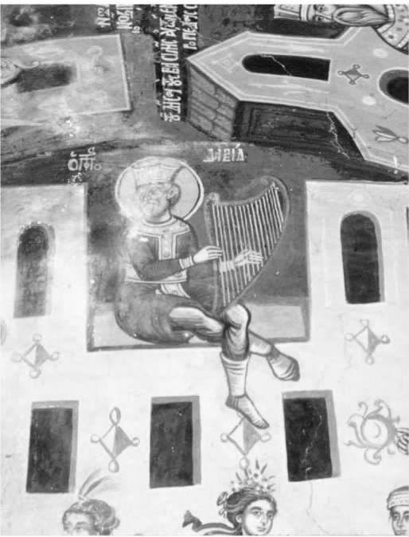

这里要讲一个故事，出自《塔木德》。有些注解放入方括号内；由读者自己分辨每次所使用的人称代词“他”是指谁。对先知以利亚在故事中出现，不必惊讶；《塔木德》成书之前约一千年，以利亚驾烈火战车升天，然而，他的确时常回来引导并激励博学而诚挚的人。甚至在我们充满怀疑的岁月，也有人自称见过以利亚现身。顺便说一句，“注定要去来世”的意思，与基督教徒所说的“获救”差不多一样。
这个离奇的传说只针对一些人，这些人认为自己知道“精神的”是指什么。以利亚向墨守成规的巴洛卡拉比表明，“精神英雄”不夸耀自己虔诚，甚至也不像巴洛卡本人（他显然想从先知那里得到从未 得到的赞美）这样博学而虔诚。他们看起来可能很平常，甚至不像平常意义上信教的，他们平和的举动却提高了周围人的生存质量——他们是关照他人、富于同情心的人，利用自己的天分减轻人们的负担。
所有这一切似乎离《圣经》对精神性的要求太远：“你们要分别为圣，因为我耶和华你们的神是圣洁的。”（《利未记》，19：2）但是，圣洁只能在斋戒、祈祷和“精神的”行为中找到吗？显然不是。事实上，《利未记》第19章下面的内容主要是谈社会行为，没提斋戒和祈祷。“在你一切所行的路上，都要承认他”（《箴言》，3：6），这一句说明了在犹太传统中理解精神性的方法；生活的每一个 方面，都应该是信奉上帝的手段，而不能仅仅履行“宗教”责任。真正的精神性，或者笃信上帝，既要表现在祈祷、研读经书或者禁欲苦修之中，也要体现于日常的社会交往之中。
然而，祷告是犹太教关切的重点，是表达精神性的主要形式。与祷告同等重要，甚至更重要的是研读经书。两者都是为了表达我们的“忏悔”，为了“回到”上帝的怀抱，回到我们的家园。
《圣经》记载了很多个人祷告的例子；最好的一个例子是所罗门在圣殿落成典礼上的祷告（《列王记上》，8：22—53）。《诗篇》收录的既有个人祷告词，也有集体祷告词；它们被称为“第二圣殿时期的祷告书”。很多篇目今天读来依然清新，还在激励着犹太教徒与基督教徒崇拜上帝。
也许因为人们把祷告当成正常的人类活动，《圣经》便没有明确的“圣诫”要求人们祷告。可是，拉比在《申命记》（10：20）的经文中发现了一条圣诫：“耶和华你的神，你必须要事奉祂。”因为祷告就是“事奉”，即“用心事奉”，这与在圣殿中献祭事奉上帝形成了对比。该节教导我们，应该通过日常祷告事奉上帝。迈蒙尼德（1138—1204）是这样说的：“一个人（不论男女）每天都应该向上帝求恳、祈祷，赞颂唯一的神，如果他有福了，就因为自己的需求而向上帝祈祷……然后因上帝的赐予，每个人都该尽其所能，赞美上帝，感上帝之恩。”
图8 犹太教会堂，位于伦敦贝维斯·马克斯街，1701年建成，取代了克里教堂街的犹太教会堂。为英国现存最早的犹太会堂，仍在使用。
精通《塔木德》的拉比讨论祷告时，引入卡瓦纳（意为“方向”、“意图”），或者说“灵性”这个概念。他们把哈拿求子的祷告文（见《撒母耳记上》第1章）解释为诚挚自然的祷告的范例；从哈拿身上我们看到，祷告要求内在的 信奉，要求的是发自内心，而不是仅凭口说。祷告不仅仅是口中说的话；用《诗篇》的话来说，祷告是“内心的流露”，是“发自内心深处的求告”。
卡瓦纳有许多层面。立陶宛拉比哈伊姆·索洛韦伊奇克（1853—1917）区分了两种情形下的卡瓦纳，一种是理解祷告词这个简单意义，另一种是意识到在上帝的跟前并求恳祂。索洛韦伊奇克坚信，后者是祷告中不可或缺的；凭口说话，无论有什么含义，如果没有那种敬畏和神秘的深义，就不是祷告。
引词、赞美、感恩、求恳（为自己和他人）、忏悔和请求宽恕，这些是祷告的主要内容。
那么，向谁祷告呢？迈蒙尼德的“信仰原则十三条”（见附录A）第五条说：“正确的做法是直接向造物主祷告，不向任何其他的存在者祷告。”他不赞成神秘主义者的做法，神秘主义者有时向天使或者舍金纳（神显现的形象）祷告，而不是“直接”面向大能的造物主。
《光明篇》是西班牙犹太神秘哲学（公元13世纪后期）的巅峰之作，它把祷告视为雅各的梯子，能够连接尘世与天堂：“祷告的声音传到天上，十二道天堂的大门敞开，站在第十二道大门门首的是亚纳尔，他是专职主管天下万国的天使。祷告的声音传上来后，天使就站起来，对每个大门都说这样的话：‘众城门啊！抬起你们的头来……’（《诗篇》，24），所有大门都打开了，祷告声就进去了。”天上的天使都走出来调停，所有障碍都已清除，地上的和天上的联系在一起。
本质上，祷告是个人与上帝之间私下里的交流，不一定要在犹太会堂里；不管人在哪里，都可以诵读正式的祈祷文。但是，教堂会众的集体祷告多了一份精神的意义，舍金纳（神显现的形象）出现在“以色列的营”，忠信上帝的人聚合的地方。因此，达到礼拜的规定人数——传统上是多于十位十三岁以上的犹太男性，如果可能的话，就应该诵读常规的祷告文。尽管不是必须的，但还是在犹太会堂中祷告好一些；在讲经堂中祷告更好，那是定期学习《托拉》的场所，因而要比“仅”供祷告或公众集会的地方更加圣洁。
《塔木德》至少记录了一个例子：一个女人的祷告好过她丈夫的祷告。然而，女人被归入“私人”的范畴，因而无法充当祷告规定的人数，也不一定要去公众场所敬拜。女人所用的特殊的意第绪语祷告词，被称为“泰奇内斯”，具有独特的精神性，也许早在公元15世纪就专为私人使用而创写了。犹太教的非正统派分支（见第七章）在不同程度上已经赋予女人在犹太会堂中与男人相同的地位。自1980年代以来，正统派犹太教女性专用的祷告程序已按标准的敬拜过程，创写出相似的祷告文，虽然对此尚存在争议。
祷告“有效果”吗？有用 吗？纳粹大屠杀的苦难经历使很多犹太人都否认上帝是“干涉主义者”这一传统观念；上帝确实没有理会子民的祷告，没有救他们逃出骇人听闻的浩劫。甚至在大屠杀之前，有些人就被科学和哲学观点所说服，相信与传统教义相反，上帝不会直接介入人间之事。
不过，传统派依然相信，上帝会回应人的祷告，改变客观现实。有的人强调祷告的间接 效果；祷告通过人的心理过程影响客观事件，包括“自我实现的预言”这种现象。但是，现实并不那么简单。即便不可能用科学方法去证明祷告能改变客观现实，信徒也有充分的理由声称，他或她见证了上帝在现实世界的事件中现身。
可以肯定的是，祷告改变了祷告者的内在 现实。实际上，标准的希伯来词语“泰斐拉”（即“祷告”）派生于意为“判断”的词根，因而表达了“自省”或“内省”的意思。在祷告过程中，祷告者可以更好地理解自我，从而获得精神上的拓展。可是，很多人认为这还不算是对祷告的充分表述。亚伯拉罕·约书亚·海舍尔（1907—1971 [1] ）斥之为“宗教唯我论”，因为祷告被等同于纯粹的自我暗示。而且他怀疑，祷告时一方面觉得上帝“好像”在倾听，一方面又同时否定祂在倾听，这就效果而言是不是可靠。
《诗篇》作者每天祷告七次（《诗篇》，119：164），但以理每天在巴比伦祷告三次（《但以理书》，6：11）。尽管有些学者持有异议，但似乎确然无疑的是，犹太人的祷告不论是个人的还是群体的，都与在圣殿中的敬神活动不同；它们早在公元70年罗马人毁掉圣殿之前就已很好地确立了。
然而，直到公元100年前后，才有人试图规范并确定祷告的程序。礼拜仪式的伟大先驱是迦玛列二世，他是位于耶路撒冷附近的耶维奈学院的院长，也是犹太人真正的领袖。大约在同一时期基督教徒也形成了一套基本的礼拜仪式；也许犹太教和基督教的领袖都认识到，固定的礼拜仪式是确定信徒的信仰、促进“宗教的正确方向”这一观念的途径。
无论如何，时至今日，迦玛列二世的礼拜仪式确定了犹太教徒祷告的形式和主要内容，不管是对改革派还是对正统派犹太教来说。有三种日常的“侍奉程序”：晚祷叫玛阿里夫（或叫阿拉维特）；早祷叫莎查里特；午祷叫敏彻。安息日及节庆日，早祷之后再增加一个仪式叫穆萨夫（“附加仪式”），赎罪日还要增加奈依拉仪式（“关闭天堂的大门”）。
三种日常的侍奉
这些仪式是围绕两种重要的祷告文制定的。其一是《施玛篇》，由三种形式的经书诵读组成，开头称颂上帝是唯一的。另一种是《阿米达》（即“站立”），或称舍摩尼埃斯列（即“十八”，祷告文共计十八篇），包括赞美、祈愿与感恩。
《施玛篇》在晚祷和早祷时诵读，午祷时不诵读；《阿米达》总共背诵三次。
迦玛列二世只确定了祈福的开始与结尾，由祷告领诵人或个人礼拜者根据特定主题即席组织。他的祷告文简明扼要，用纯正的希伯来文写成，虽然也允许用方言祷告。
迦玛列二世之前，公众诵读《托拉》的形式已经确立下来，但没有固定的《托拉》选本，他也没有编选。现在犹太教徒中或多或少已经统一了的体系是在庆法节的开头与结尾，犹太会堂中要当众诵读《摩西五经》（即《创世记》、《出埃及记》、《利未记》、《民数记》和《申命记》），每个安息日早晨，要读一本手书羊皮古卷，即《托拉》卷轴，整部《托拉》一年诵读完毕。另外，还有很多其他选自《圣经》的常用祷告文读本。
诵读《阿米达》祷告文时，要语调平静，要神情虔敬地面向耶路撒冷站立，双足并拢，双手交叉放在胸口；要微微鞠躬四次。正确的身姿并非绝对必要，但祷告时一心一意便不可或缺了；患病时，或在旅途中，站姿干扰注意力时，可以坐下；如果太过焦虑，无法集中精神，就不要按规定祷告。
希勒尔学派规定，诵读《施玛篇》，“无论什么姿式都可以”，不必采用任何特定的姿式。开篇称颂上帝为唯一时（“以色列啊，你要听。耶和华我们的神是独一的主！”），应该保持平静，合上双眼，双手覆于眼上，要全神贯注。但以理（《但以理书》，6：11）以跪姿祷告，圣殿中也有跪拜和磕长头的情形，但现在已不是犹太教徒的做法。犹太会堂中，跪拜与磕长头目前限于在新年和赎罪日的附加仪式中诵读《阿勒努》祷告文，限于在赎罪日背诵圣殿祷告文。
希伯来文的祷告诗深深扎根于《圣经》自身，比如《诗篇》。
《施玛篇》开篇（《申命记》，6：4—9）
以色列啊，你要听。耶和华我们的神是独一的主。
祂的名应当称颂，祂的国永世长存。
你要尽心，尽性，尽力爱耶和华你的神。我今日所吩咐你的话都要记在心上，也要殷勤教训你的儿女。无论你坐在家里，行在路上，躺下，起来，都要谈论。也要系在手上为记号，戴在额上为经文。又要写在你房屋的门框上，并你的城门上。 [2]
公元7世纪阿拉伯人征服巴勒斯坦之前，巴勒斯坦地区的赞美诗（piyyut，这个词与英文的“poet”来源于同一个希腊文单词）研读学校已然盛行。最著名的赞美诗人是埃利埃泽·凯利尔，他的诗作在正统派犹太教的礼拜仪式中依然占有显著的位置。他的风格新颖独特，长于使用复杂的韵脚、藏头、叠句等手法，诗中多用新词以及听觉奇特的语法形式，当然，他也创作了风格简朴的好诗。
下面是两首对比鲜明的希伯来文祷告诗。第一首是悔罪赞美诗，出自穆斯林国家西班牙的诗人、哲学家所罗门·伊本·加比罗尔（公元11世纪）。
接下来我们再看看《来吧，我的朋友》一诗的前四节和最后一节。这首诗由犹太神秘哲学家所罗门·阿尔卡贝兹创作于1540年前后。星期五安息日开始时的晚祷，不论是正统派还是改革派犹太教的各种仪式上，依然诵唱此诗。诗中，安息日被人格化为新娘和女王。它提醒我们，安息日本身就是犹太教一个重大的精神体验，欢迎所有男人，也欢迎所有女人和孩子参与。
古代配乐已经无从得知了，不过，在《托拉》和古老的努撒克祷告诗的传统吟诵中，在某些祷告文的诵读形式中，还有某些元素遗存。中世纪的某个时候，祷告文领诵（hazzan，这个词本身更古老，只不过词义变了）这门技艺已经成形，领诵人的任务就是提高公众祷告的美感；现在，比较大的犹太会堂常常以有专业领诵人为荣，不再仅以拉比为荣了。
曼图亚的萨洛莫内·德罗西将意大利文艺复兴时期的声乐对位法引入犹太教音乐中。自18世纪起，哈西德教派的犹太教音乐吸收了东欧民间音乐元素；19世纪，奥地利人萨洛蒙·祖尔策和普鲁士皇家艺术学院第一位犹太学生、近代第一个犹太会堂唱诗班指挥德国人路易·莱万多夫斯基，共同引入了混声合唱、管风琴和门德尔松的风格；正统派犹太教不接受混声合唱和管风琴。到了20世纪，数位著名的犹太作曲家，像达吕斯·米约和欧内思特·布洛赫，都为犹太会堂作过曲。
在形成传统的同时，犹太会堂的音乐也不断地受到周围各种风格与品位的影响；受过良好音乐教育的教徒只要听听音乐的旋律，差不多就能弄清犹太教的历史！音乐，像建筑和装饰艺术一样，成为犹太教精神表现的重要部分。
关于犹太教，有个半真半假的说法流传极广，称犹太教缺乏“宗教规程”，比如基督教里的那种修道规程。确实，犹太教没有修女也没有修士。然而，数个世纪以来，致力于精神性的各种特定形式的思潮、运动以及精英组织层出不穷。
拉比犹太教本身就产生于这样一次运动，即“教友们”发起的运动，他们在公元1世纪组成各种协会，致力于强化对什一税和洁净等律法的遵守；尤其是，与一些《死海古卷》团体一样，他们共同用餐以示“洁净”，就像在圣殿中上帝的跟前一样。

图9 考古发掘证明，坟墓中不可使用图像这一禁令并没有阻止犹太人装饰会堂。这幅6世纪的马赛克拼贴画出土于加沙的一座会堂，画的是大卫王弹奏竖琴。
还有一些所谓“烈火战车派”与“圣殿派”神秘主义团体，也许早在公元3世纪就已经存在了。他们在创作的圣诗中将“升天”当成终极的精神体验来歌颂。
公元12世纪的埃及出现了犹太苏非运动，将神秘主义教义与精神体验和禁欲修行结合到一起。最近出版的亚伯拉罕·迈蒙尼德的《上帝的仆人概论》和奥巴代亚·迈蒙尼德的《论文集》高度关注了这场哈西德运动，或者说“虔诚者”的运动；这两位作者——亚伯拉罕和奥巴代亚分别是摩西·迈蒙尼德的儿子和孙子。
在遥远的西欧诸国，几乎在同一时期出现了另外一个哈西德派运动——德国虔诚派，他们非常强调神秘主义和殉教。下面是伊斯雷尔·赞格威尔的几节译文，选自《赞美上帝的荣光》。此诗由德国虔诚派的领袖人物之一犹大·赫-哈西德创作，在诗中，亲近上帝的神奇渴望因从哲学上认识到无人能真正理解祂的特质而得到缓和：
后来的犹太教“精神”运动包括16世纪巴勒斯坦的撒斐德神秘主义，包括18世纪乌克兰的哈西德主义——今天的哈西德教派仍属于这个分支，还包括伊斯雷尔·撒兰特发起的穆萨运动，后者非常强调进行道德的自我批评。
犹太教精神性最普及、最易接受、最具特色的形式就是研习《托拉》。有一个关于希勒尔（1世纪早期）最伟大的门徒、乌西勒的儿子乔纳森的故事：他坐读《托拉》时，精神上的激情之火太盛，如果有鸟飞过他的额头，也会被点燃。《托拉》的词句充满欢乐，这种欢乐自上帝在西奈山上把它赐予犹太人的那一天起一直未曾稍减。
犹太经学院（现在也有专为女性开设的类似机构）中的年轻人——大多不是 为了获得拉比的职位——被引向传统的《托拉》研习，带着虔诚与专注。理想的精神生活从经学院渗入普通人的日常行为之中，他们在日常祷告之前一早就去聆听讲经；或者工作之余入夜时分，或者白天能抽出空来的任何时候，经常与一个朋友共同研读《托拉》，他们之间的友谊也因精神的纽带而得以加深。
与开头一样，我们也以一个故事结束这一章吧。这是约瑟夫·多夫·索洛韦伊奇克写的一篇回忆录。他是12世纪正统派犹太教重要的思想家，童年时代生活于中欧。他在这篇回忆录中写道：
我会伤心地去找妈妈：“妈妈，爸爸不会解释兰巴姆说的话！我们怎么办呢？”妈妈说，“爸爸会找到办法解释兰巴姆的。如果他找不到，也许等你长大了，你会找到解释兰巴姆的办法。重要的是要不断地学习《托拉》，享受学习的过程，让《托拉》激励你。”……
这可不是一个孩子的白日美梦。这是一个心理的和历史的现实，甚至今天还存在于我的灵魂深处。我坐下来读经时，立刻就会发现周围都是历史上的贤哲，我们结为私交。右边是兰巴姆，左边是泰姆拉比，赖施坐在前面解经，泰姆拉比提出问题，兰巴姆予以答复，拉阿瓦德给出评论。他们都聚在我的小房间里……他们慈爱地看着我，一起推理研讨，一起讲读《革马拉》，像父亲一样支持我、鼓励我。
研习《托拉》不仅仅是一个教诲过程……还是对跨越数代的爱的有力表达，是精神的结合，是灵魂的统一。那些传授《托拉》的人在一家时光客栈里与那些学习《托拉》的人相会。